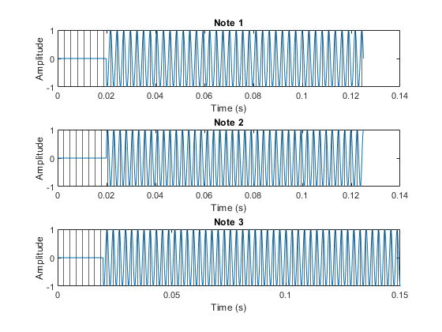
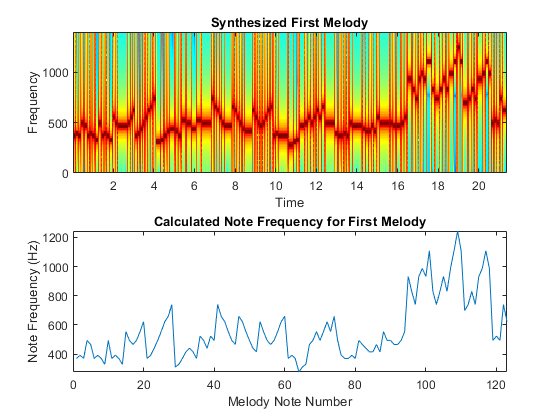

Music Synthesis Lab 4 -- Ian Ashworth, Emily Erickson, John Cimmarusti
Contents
4.a Determine Sampling Frequency
fs = 8000;
4.b Determine note duration and frequency
load bach_fugue.mat
num_melodies = length(theVoices);
melody_1_notes = theVoices(1).noteNumbers;
melody_2_notes = theVoices(2).noteNumbers;
melody_3_notes = theVoices(3).noteNumbers;
bpm = 120;
bps = bpm/60;
spb = 1/bps;
spp = spb/4;
for i = 1:length(melody_1_notes)
m1_freq_ratio(i) = 49-melody_1_notes(i);
end
for i = 1:length(melody_2_notes)
m2_freq_ratio(i) = 49-melody_2_notes(i);
end
for i = 1:length(melody_3_notes)
m3_freq_ratio(i) = 49-melody_3_notes(i);
end
for i = 1:length(melody_1_notes)
if m1_freq_ratio(i) < 0
m1_note_freq(i) = 440/2^(abs(m1_freq_ratio(i))/12);
elseif m1_freq_ratio(i) > 0
m1_note_freq(i) = 440*2^(abs(m1_freq_ratio(i))/12);
else
m1_note_freq(i) = 440;
end
end
m1_note_freq
for i = 1:length(melody_2_notes)
if m2_freq_ratio(i) < 0
m2_note_freq(i) = 440/2^(abs(m2_freq_ratio(i))/12);
elseif m2_freq_ratio(i) > 0
m2_note_freq(i) = 440*2^(abs(m2_freq_ratio(i))/12);
else
m2_note_freq(i) = 440;
end
end
for i = 1:length(melody_3_notes)
if m3_freq_ratio(i) < 0
m3_note_freq(i) = 440/2^(abs(m3_freq_ratio(i))/12);
elseif m3_freq_ratio(i) > 0
m3_note_freq(i) = 440*2^(abs(m3_freq_ratio(i))/12);
else
m3_note_freq(i) = 440;
end
end
melody_1_note_duration = zeros(size(melody_1_notes));
for i = 1:length(melody_1_notes)
melody_1_note_duration(i) = theVoices(1).durations(i)*spp;
end
melody_1_note_duration
melody_2_note_duration = zeros(size(melody_2_notes));
for i = 1:length(melody_2_notes)
melody_2_note_duration(i) = theVoices(2).durations(i)*spp;
end
melody_3_note_duration = zeros(size(melody_3_notes));
for i = 1:length(melody_3_notes)
melody_3_note_duration(i) = theVoices(3).durations(i)*spp;
end
m1_note_freq =
1.0e+03 *
Columns 1 through 7
0.3700 0.3920 0.3700 0.4939 0.4662 0.3700 0.3920
Columns 8 through 14
0.3700 0.3296 0.4939 0.3700 0.3920 0.3700 0.3296
Columns 15 through 21
0.5544 0.4939 0.4662 0.4939 0.5544 0.6223 0.3700
Columns 22 through 28
0.3920 0.4400 0.4939 0.5544 0.6223 0.6593 0.7400
Columns 29 through 35
0.3111 0.3296 0.3700 0.4153 0.4400 0.4153 0.3700
Columns 36 through 42
0.5233 0.4939 0.4400 0.5233 0.4939 0.7400 0.6593
Columns 43 through 49
0.6223 0.5544 0.4939 0.4662 0.6593 0.6223 0.5544
Columns 50 through 56
0.4939 0.4400 0.4153 0.6223 0.5544 0.4939 0.4662
Columns 57 through 63
0.4939 0.5544 0.6223 0.6593 0.3700 0.3920 0.3700
Columns 64 through 70
0.2772 0.3111 0.3296 0.4662 0.4939 0.5544 0.4939
Columns 71 through 77
0.5544 0.6223 0.5544 0.6593 0.4939 0.3920 0.3700
Columns 78 through 84
0.3700 0.3920 0.3700 0.4939 0.4662 0.4400 0.4153
Columns 85 through 91
0.4153 0.4662 0.4153 0.5544 0.4939 0.4939 0.4662
Columns 92 through 98
0.4662 0.4939 0.5544 0.9323 0.8306 0.7400 0.9323
Columns 99 through 105
0.9878 0.9323 1.1087 0.8306 0.7400 0.8306 0.9323
Columns 106 through 112
0.8306 0.9878 1.1087 1.2445 1.1087 0.6985 0.7400
Columns 113 through 119
0.8306 0.7400 0.9323 0.9878 1.1087 0.9878 0.4939
Columns 120 through 123
0.5233 0.4939 0.7400 0.6223
melody_1_note_duration =
Columns 1 through 7
0.1250 0.1250 0.1500 0.1500 0.1500 0.1250 0.1250
Columns 8 through 14
0.1500 0.1500 0.1500 0.1250 0.1250 0.1500 0.1500
Columns 15 through 21
0.1250 0.1250 0.5000 0.1250 0.1250 0.1000 0.1250
Columns 22 through 28
0.1250 0.1250 0.1250 0.1250 0.1250 0.1250 0.1500
Columns 29 through 35
0.2500 0.1500 0.1500 0.1500 0.2500 0.1500 0.1500
Columns 36 through 42
0.2500 0.2500 0.2500 0.2500 0.5000 0.1250 0.1250
Columns 43 through 49
0.1250 0.1250 0.1250 0.3750 0.1250 0.1250 0.1250
Columns 50 through 56
0.1250 0.1250 0.3750 0.1250 0.1250 0.1250 0.1250
Columns 57 through 63
0.1250 0.1250 0.1250 0.1500 0.1250 0.1250 0.5000
Columns 64 through 70
0.2500 0.1500 0.1500 0.2500 0.1500 0.1500 0.1500
Columns 71 through 77
0.1250 0.1250 0.1500 0.1500 0.5000 0.1500 0.1500
Columns 78 through 84
0.1250 0.1250 0.1500 0.1500 0.5000 0.1500 0.1500
Columns 85 through 91
0.1250 0.1250 0.1500 0.1500 0.5000 0.1500 0.1500
Columns 92 through 98
0.2500 0.1500 0.1500 0.2500 0.1500 0.1500 0.1250
Columns 99 through 105
0.1250 0.1500 0.2500 0.1500 0.2500 0.1500 0.1500
Columns 106 through 112
0.1500 0.2500 0.1500 0.1500 0.1500 0.2500 0.1500
Columns 113 through 119
0.1500 0.1500 0.2500 0.1500 0.1500 0.1500 0.1250
Columns 120 through 123
0.1250 0.1500 0.1500 0.2500
4.c Music synthesis
m1synth = zeros(1, round(sum(melody_1_note_duration)*fs+length(melody_1_notes)) );
n1 = 1;
for kk = 1:length(melody_1_notes)
tt = 0:1/fs:melody_1_note_duration(kk);
freq = m1_note_freq(kk);
tone = real(1.*exp(j*2*pi*freq*tt));
n2 = n1 + length(tone)-1;
Ltone = length(tone);
tail = round( max([0.04*fs,0.05*Ltone]) );
m1synth(n1:n2) = m1synth(n1:n2) + mg_env(Ltone,tail).*tone;
n1 = n2+1;
end
audiowrite('First_Melody_Synth.wav',m1synth,fs)
soundsc(m1synth,fs);
4.d Plotting sinusoids
figure
for i = 1:3
tt = 0:1/fs:(melody_1_note_duration(i));
freq = m1_note_freq(i);
tone = real(1.*exp(j*2*pi*freq*tt));
Ltone = length(tone);
tail = round( max([0.04*fs,0.05*Ltone]) );
subplot(3,1,i)
plot(tt,mg_env(Ltone,tail).*tone)
title("Note "+ i)
xlabel("Time (s)")
ylabel("Amplitude")
xline([0:1/freq:melody_1_note_duration(i)])
end

4.e Spectrograph
figure
subplot(2,1,1)
specgram(m1synth,512,fs)
title("Synthesized First Melody")
ylim([0,1400])
subplot(2,1,2)
plot(m1_note_freq)
xlim([0,123])
xlabel("Melody Note Number")
ylabel("Note Frequency (Hz)")
title("Calculated Note Frequency for First Melody")

Other Melodies
m2synth = zeros(1, round(sum(melody_2_note_duration)*fs+length(melody_2_notes)) );
n1 = 1;
for kk = 1:length(melody_2_notes)
tt = 0:1/fs:melody_2_note_duration(kk);
freq = m2_note_freq(kk);
tone = real(1.*exp(j*2*pi*freq*tt));
n2 = n1 + length(tone)-1;
Ltone = length(tone);
tail = round( max([0.04*fs,0.05*Ltone]) );
m2synth(n1:n2) = m2synth(n1:n2) + mg_env(Ltone,tail).*tone;
n1 = n2+1;
end
m3synth = zeros(1, round(sum(melody_3_note_duration)*fs+length(melody_3_notes)) );
n1 = 1;
for kk = 1:length(melody_3_notes)
tt = 0:1/fs:melody_3_note_duration(kk);
freq = m3_note_freq(kk);
tone = real(1.*exp(j*2*pi*freq*tt));
n2 = n1 + length(tone)-1;
Ltone = length(tone);
tail = round( max([0.04*fs,0.05*Ltone]) );
m3synth(n1:n2) = m3synth(n1:n2) + mg_env(Ltone,tail).*tone;
n1 = n2+1;
end
function envelope = mg_env(length, attack)
envelope = ones(1,length);
attack1 = max(2,round(attack/2));
envelope(1:attack1) = (0:(attack1-1)/attack1);
release = attack;
e(length:-1:length-release) = (0:release)/release;
end